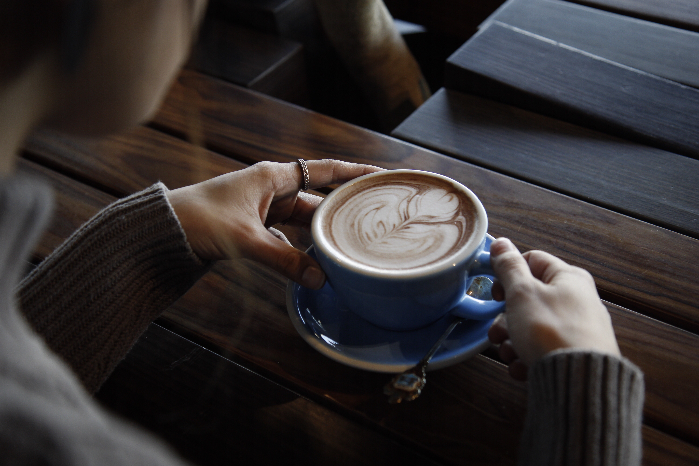
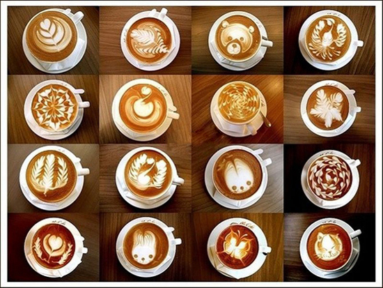

咖啡选购指南
不论是哪—种咖啡，新鲜度都是影响品质的重要因素。选购时，抓一两颗咖啡豆在嘴中嚼一下，要是清脆有声，表示咖啡豆未受潮，而唇齿留香的咖啡豆才是上品，但最好还是用手捏捏，感觉—下是否实心，千万不要买空壳的咖啡。
咖啡饮用禁忌
切记咖啡不宜与茶同时饮用。茶和咖啡中的鞣酸可使铁的吸收减少75%。

喝咖啡的利与弊
咖啡作为世界三大饮料之一，对我们的身体健康做出了很大的贡献和帮助，让我们一起聊聊每天喝咖啡都有什么好处和坏处。
咖啡饮用说明
咖啡杯的用法、咖啡加糖方法、咖啡匙的用法、咖啡太热冷却、杯碟的使用法、咖啡品尝方法、会客中的咖啡...
咖啡品尝口味
品尝咖啡就是对多种咖啡进行对照，比较和品味。当您只品尝一种咖啡，您就无法做出对照和比较。如果您一次品尝两种或者三种咖啡，您不仅可以根据自己的喜好进行对照和比较，还可以根据它们的香味、酸度、醇度和风味来进行对照和比较。注意：当您品尝多种咖啡时，首先要品尝醇度比较低的咖啡，然后再品尝醇度比较高的咖啡。
不是所有的“咖啡”都是“咖啡”
爱尔兰咖啡并不是产自爱尔兰的咖啡，而是一种鸡尾酒，由热咖啡、爱尔兰威士忌、奶油和糖混合而成。相传，一位都柏林机场的酒保为了心仪的女孩，将威士忌融入热咖啡，首次调制成爱尔兰咖啡这款鸡尾酒。爱尔兰咖啡又叫情人的眼泪，最广为流传的故事是一位都柏林机场的酒保喜欢上了一位空姐，空姐每次都点咖啡，从未点过鸡尾酒，为了让空姐尝到自己拿手的鸡尾酒，创造出了这款爱尔兰咖啡。
黑咖啡减肥法
咖啡是一种非常好的减肥食物，咖啡减肥在瘦身的时候咖啡不光是可以用来喝的，咖啡对于减肥来说还有很多妙用， 喝咖啡量要控制 咖啡虽然能促进脂肪代谢帮助减肥燃脂，但实际上每天喝咖啡的量不宜超过10杯(以每杯150ml计算)。
闻香观色之如何品咖啡？
一杯咖啡端到面前，先不要急于喝，应该像品茶或品酒那样，有个循序渐进的过程，以达到放松、提神和享受的目的。你可以在纯粹的黑咖啡里，加一点点糖、奶；你也可以欧式一点，像非洲和阿拉伯地区那样在咖啡中加入肉桂等香料；如果你不习惯咖啡苦涩味，也可以在你的咖啡里加一点你喜欢的果汁……不过，喝一杯原汁原味的黑咖啡，能够品尝到咖啡本身浓郁的风味，会被看作是品尝咖啡的行家里手。不论怎么喝，品尝咖啡也还是有一些讲究和知识的。

咖啡文化你了解吗？
咖啡文化（外文名Coffee culture）是一种文化。“咖啡”一词源自希腊语“Kaweh”，意思是“力量与热情”。咖啡树是属茜草科常绿小乔木，日常饮用的咖啡是用咖啡豆配合各种不同的烹煮器具制作出来的，而咖啡豆就是指咖啡树果实内之果仁，再用适当的烘焙方法烘焙而成。
家用咖啡机购买指南
根据个人喝咖啡的习惯来选购咖啡机：只喝美式： 三款都能选，美式滴滤机更推荐一些，另外两个机器会买到一些你用不着的功能。 只喝浓缩： 全自动、半自动都可以，然后你买回来想享受保姆般的服务，那就是全自动，点一点就能出一杯，想要感受做咖啡的乐趣，还是半自动好。 美式、拿铁都要喝： 全自动和半自动都可以，想要更好的奶泡，想要拉花的乐趣 ...